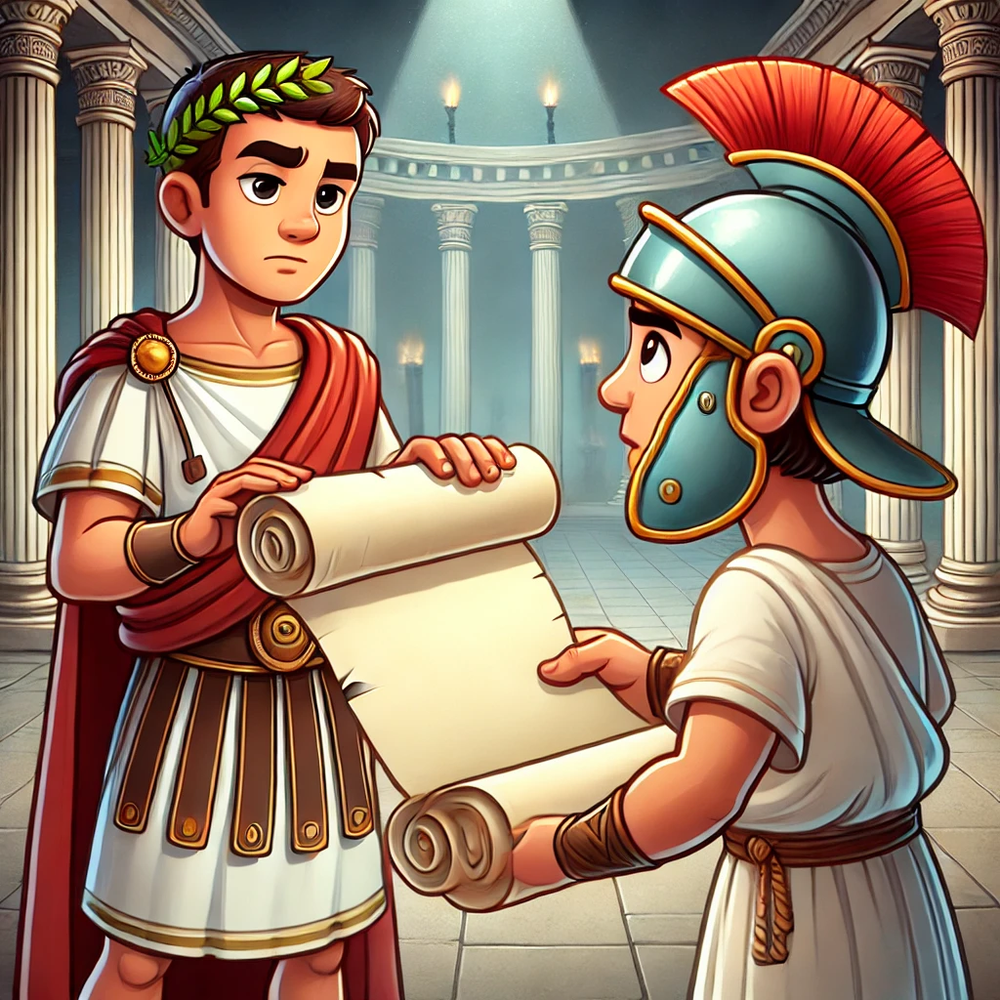
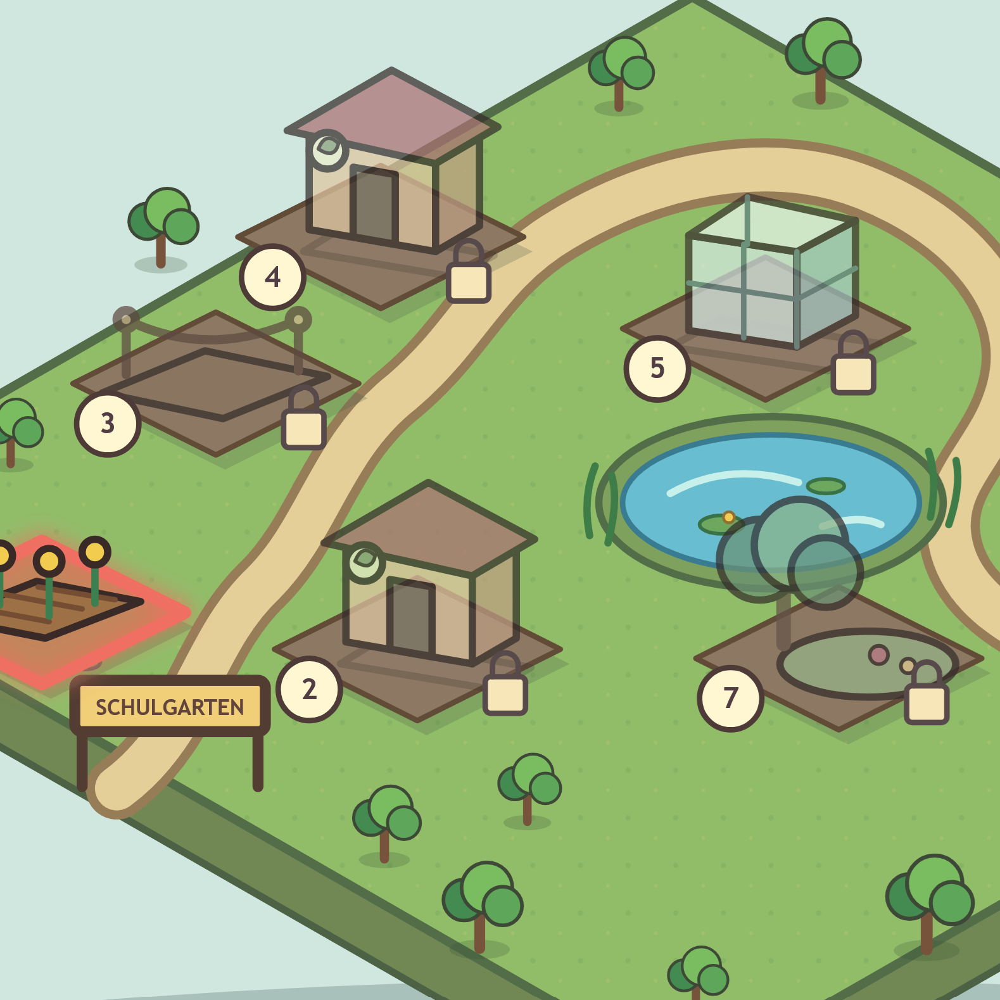
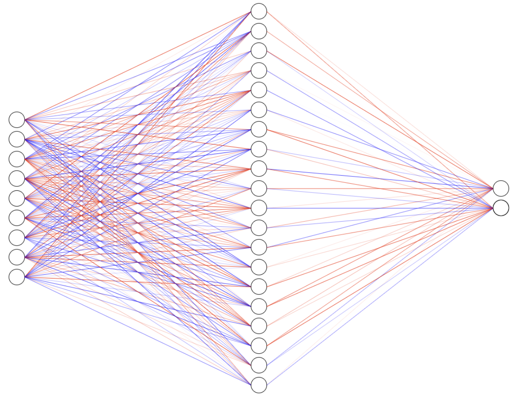
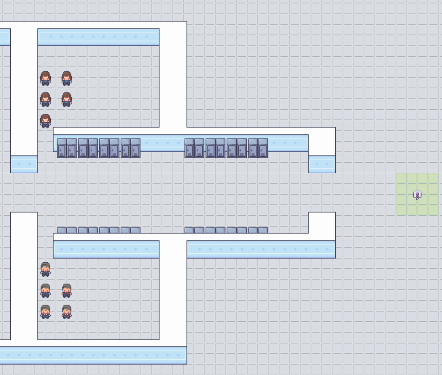

Digitale Workbooks (Nutzungsfertig)




Digitale Workbooks (In Arbeit)


Analoge Workbooks (als ZIP oder PDF)


Technische Demo / Pre-View: Features in Entwicklung




Feedback Studio
Python Exercise Feedback
Open Demo →